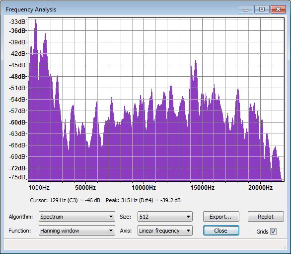

Plot Spectrum
From Audacity Manual
- Accessed by:
- 
- Spectrum of the word 'Audacity' spoken aloud
You can reduce the lowest displayable dB range by lowering the default -60 dB value for "Meter/Waveform dB range" in the Interface Preferences, as has been done for the image above.
Plots are made using a mathematical algorithm known as a Fast Fourier Transform or FFT. This gives a value for each narrow band of frequencies that represents how much of those frequencies is present. All the values are then interpolated to create the graph.
Plot Spectrum take the audio in blocks of 'Size' samples, does the FFT, and averages all the blocks together.
There is an audio version of the Uncertainty Principle that says "Frequency_Resolution*Time_Resolution = 2." Size lets you choose the FFT size which is the number of consecutive audio samples to be analyzed. If you choose 1024 samples, you will get 512 frequency bins covering the frequency range up to half the sampling frquency. Most projects use 44100 Hz sampling frequency. Thus, in this example, Time_Resolution = 1024/44.1 = 23.2 milliseconds and the frequency resolution is 44100/2/512 = 43 Hz.
Function offers choices like Rectangular, Hanning, Hamming and others. We suggest you use Hanning (actually it is a Hann window, but Hanning is widely accepted) for most situations. The fundamental principle at work here is that the way we observe our data changes what we see. The "true spectrum" of your project would be computed over the entire project and would provide very detailed frequency resolution but essentially no time resolution at all. In other words, this "true spectrum" would offer an average frequency distribution over the entire project. If we select a short interval of audio, the short-time spectrum has frequency resolution limited by the observation window time AND the result is affected by the spectrum of the window itself. For general audio analysis, the Rectangular window is least desirable, and the other options offer slightly different effects.
- Currently, only the first 10485760 samples (237.8 seconds at 44100 Hz sample rate) of selected audio can be analyzed.
- The spectrum analysis shows the sum of all selected channels, so shows the sum of left and right channels in a stereo track. If there are two selected channels with identical audio, the same peak will be 6 dB higher than if one channel was selected.
Algorithm
Determines what type of processing is done on the audio data.
- Spectrum: (default) - Plots the FFT of the data as described above.
- Autocorrelation: These options measure to what extent the sound repeats itself. This is done by taking two copies of the audio, and moving one forward by one sample. The two copies are then multiplied together, and all the values added up. This is repeated for two samples difference and so on, up to the number of samples in the size option. This gives a small result if the waveform is random (for example, noise) and a large result if it is repetitive (like a musical note). By looking at the peaks in the plot, the key frequencies present can be determined even if there is a lot of noise.
- Cepstrum: The cepstrum of an audio signal is related to the spectrum, but presents the rate of change in the different spectrum bands. It's particularly useful for properties of vocal tracks and is used, for example, in software to identify speakers by their voice characteristics.
Size
This controls how many frequency divisions are used for the spectrum, or how many samples are used for autocorrelation. In Spectrum, a larger size gives more accurate frequency resolution (narrow bands), but averages the result over a longer period of time (because more samples are needed for the calculation). In Autocorrelation, a larger size looks for repeating patterns over a larger range of time offsets, and so will detect lower frequency patterns. With either algorithm, Audacity will show a warning if the selected region is too short for the chosen size.
Function
Selects which mathematical function is used to pre-process the data. The basic forms of the FFT and autocorrelation algorithm require infinitely long sections of audio to work on, and so take infinitely long to complete. Hence the available audio must be faded in and out so that the finite length of the audio has minimum effect. The available functions are known as "windows" and fade in and out using different methods. There is a trade-off between frequency resolution and spillage from one frequency band to another.
- Rectangular: is the simplest - it just cuts off the given block of samples with a sharp cut (no fading), and so leaves a sharp click at each end of the data. This means that you get a lot of spillage into other frequency bands. Not a good plan.
- The rest fade in and out using various methods. The default (Hanning) is a good compromise, although opinions vary.
Axis
When using the Spectrum, the frequencies can be displayed on a linear scale (default, which gives equal width to each increment on the scale) or on a logarithmic scale. The log scale gives greater display width to low frequencies. Linear view can be useful to show harmonics (a component frequency of the sound that is a whole number multiple of the fundamental frequency).
Buttons
- : Exports the spectrum to a text file. You could open this text file in another program for further analysis. Note that if you export again to the same file, the new spectrum will be appended underneath the previous one.
- : Allows you to replot the spectrum when the selection changes.
- : Closes the Frequency Analysis window and saves its current settings. If you then open a new project and open an analysis window in that project, the settings saved by the last closed analysis window will be used.
Grids
Turns the measurement grids on and off.